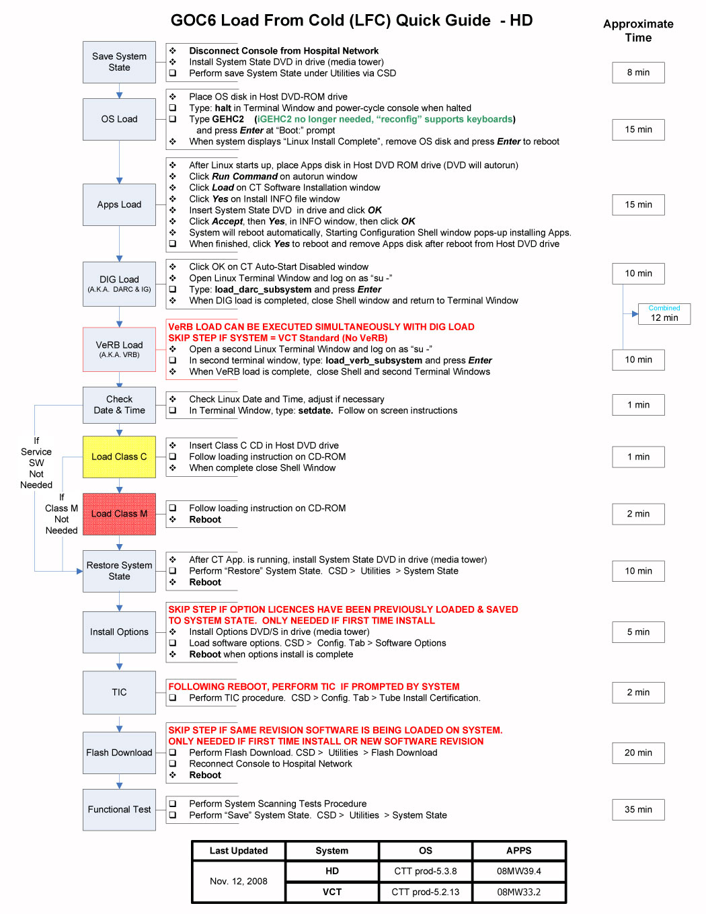

Proprietary to General Electric
Direction 5307452-8EN, Rev# 4
Discovery CT750 HD Service Methods - Adv
Proprietary to General Electric |
| Last Revised: | 20 November 2008 |
This document provides a GOC6 LFC Quick Guide for field personnel.
Illustration 1: HD Quick Guide
